Del pedido a la entrega: ventas, producción, despacho, pagos, inventario, compras y reportes, explicado por rol y paso a paso.
El ERP pone el pedido en el centro: se escribe una sola vez y de ahí salen el precio, la comanda para producción, el consumo de inventario, el despacho y el cobro. Nadie vuelve a copiar el pedido a otra hoja.
Cada persona entra con su usuario y ve solo las pantallas de su rol. Al ingresar, el sistema abre directamente su pantalla de trabajo.
| Rol | Qué hace | Pantalla de inicio |
|---|---|---|
| Administrador | Todo, incluida la configuración (recetas, reglas, tarifas) y los reportes. | Hoy |
| Vendedora | Crea pedidos, ve el día, gestiona pagos y saldos, puede despachar. | Hoy |
| Producción | Tablero de armado, asigna encargada, responde consultas, confirma lo usado. Ve las recetas. | Producción |
| Almacén | Inventario, Kardex, compras y recepción de mercadería. Ve las recetas. | Inventario |
| Delivery | Tablero de despacho: despacha y marca entregado. | Delivery |
Cerrar sesión: botón ⟵] junto a tu nombre, abajo en el menú. Cierra la sesión en todos tus dispositivos.
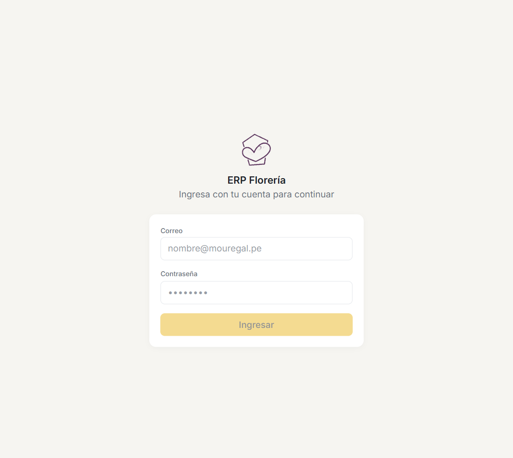
El menú oscuro de la izquierda agrupa las pantallas por etapa del negocio. La opción en amarillo es donde estás; arriba, la barra muestra la sección y la pantalla actual.
La pantalla Mapa del flujo resume las 7 partes del proceso y lleva a cada módulo. Si un paso aparece atenuado, tu rol no tiene acceso a esa etapa.
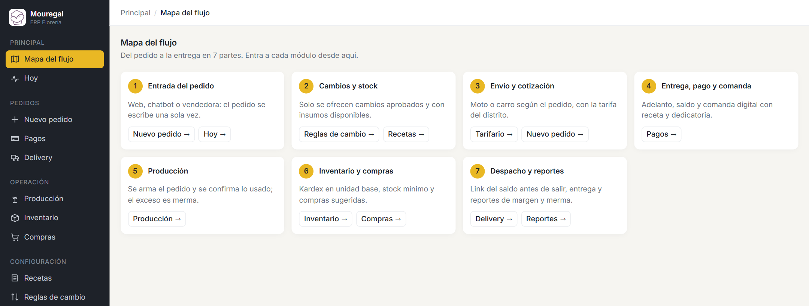
| Paso | Quién | Condición |
|---|---|---|
| Pendiente → En armado | Producción / Admin | Tener encargada asignada y ninguna consulta abierta. |
| En armado → Listo | Producción / Admin | Se pasa solo al confirmar el consumo. |
| Listo → En camino | Delivery / Vendedora / Admin | Si hay saldo, primero se genera y envía el link de pago. |
| En camino → Entregado | Delivery / Admin | Con saldo pendiente no se puede, salvo que el administrador lo habilite. |
| Cualquiera → Cancelado | Vendedora (antes de armar) / Admin | Lo ya consumido no vuelve al stock: cuenta como merma. |
Cada cambio de estado queda en el historial del pedido con fecha, hora y usuario, y se avisa al cliente.
Las acciones de las tablas y paneles son íconos. Al pasar el mouse sobre uno aparece su nombre.
| Editar el registro (insumo, producto, distrito). | Kardex: movimientos del insumo. | ||
| Desactivar o quitar (producto, regla, distrito, proveedor, línea de receta). | Reactivar un registro desactivado. | ||
| Guardar la fila que estás editando. | Cancelar la edición o cerrar un panel. | ||
| Confirmar un pago recibido. | Anular un cobro pendiente. | ||
| Copiar el link de pago. | Llamar o escribir por WhatsApp a quien recibe. |
Admin · Vendedora · Producción
Es el tablero de control. Se actualiza solo cada 15 segundos: puedes dejarlo abierto en la computadora del mostrador.
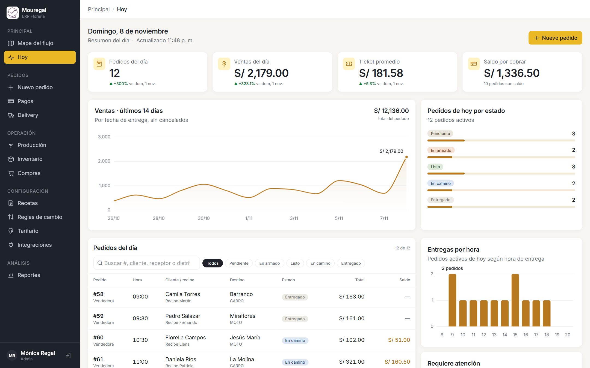
Admin · Vendedora
El precio, el vehículo de envío y la disponibilidad los calcula el sistema; no hace falta sumar nada a mano. Un pedido puede tener varios productos.
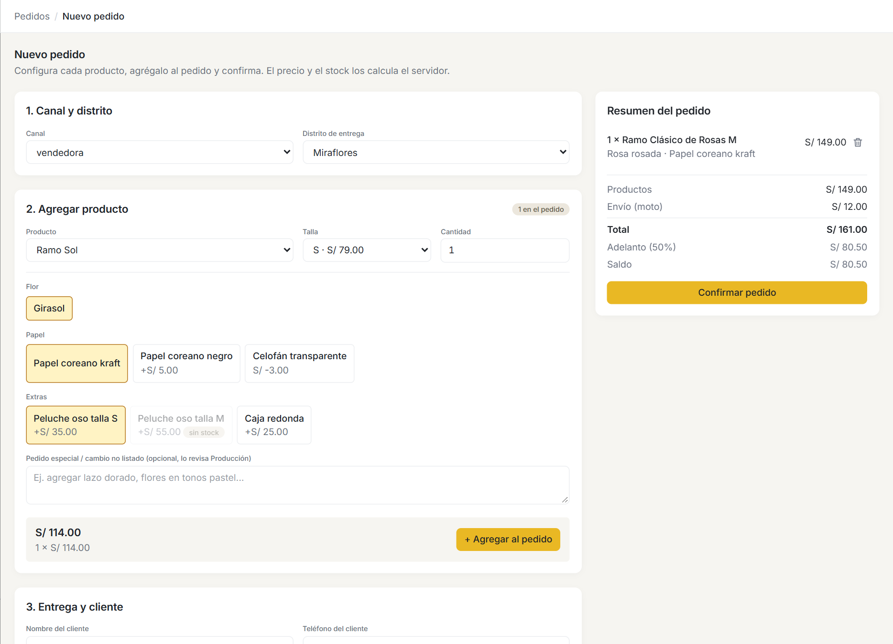
Abre un pedido desde Hoy, Pagos o Delivery pulsando su número. Ahí está todo lo del pedido en una sola vista.
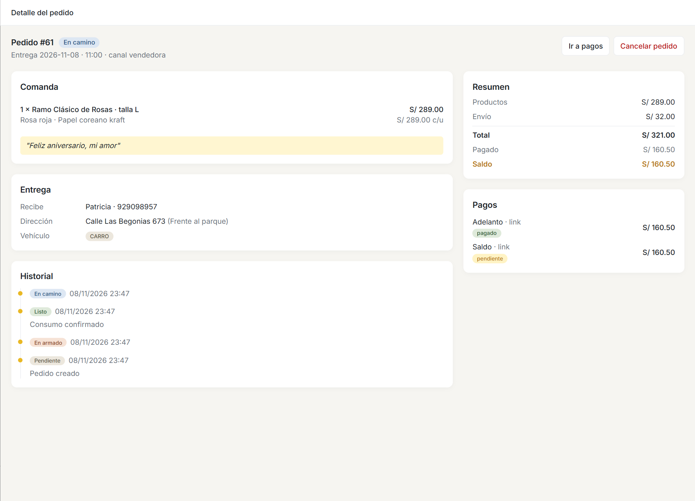
Pulsa Cancelar pedido y escribe el motivo. La vendedora puede cancelar mientras el pedido está pendiente o en armado. Si ya está listo o en camino, solo el administrador puede cancelarlo, porque los insumos ya se usaron: quedan registrados como merma y no vuelven al stock. Los cobros pendientes del pedido se anulan solos.
Admin · Producción
El tablero tiene tres columnas ordenadas por hora de entrega: Pendiente En armado Listo. Se actualiza solo cada 15 segundos. Pulsa una tarjeta para abrir su comanda.
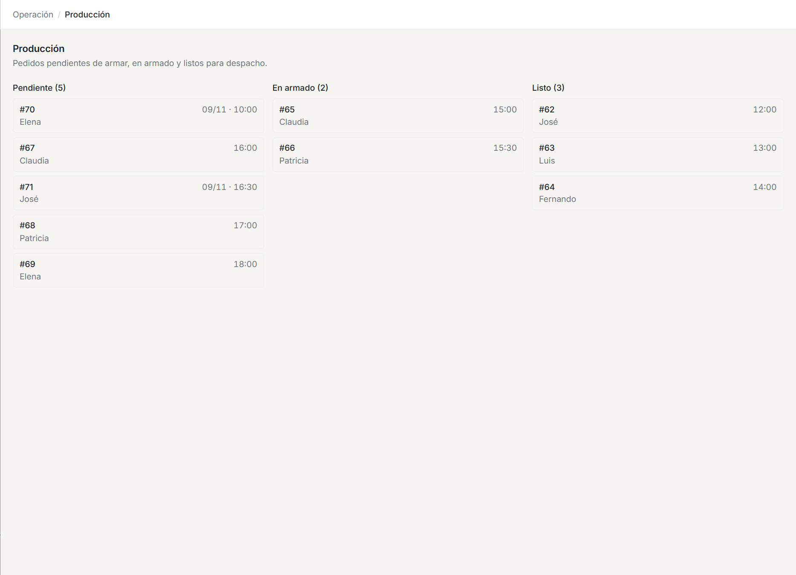
Al terminar el arreglo, abre el pedido en armado. La tabla Receta vs. usado trae la receta exacta del pedido (ya con los cambios de flor, papel y extras).
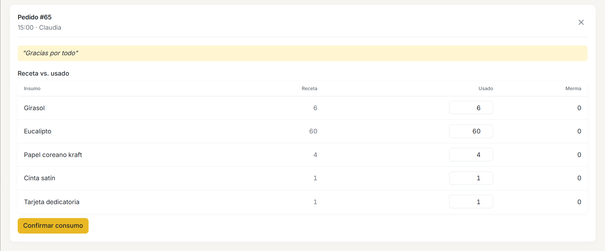
Admin · Delivery · Vendedora
Tarjetas de despacho en tres columnas: listos para despachar, en camino y entregados del día. Cada tarjeta muestra destino, referencia, quién recibe (con acceso a llamada y WhatsApp), vehículo y saldo.
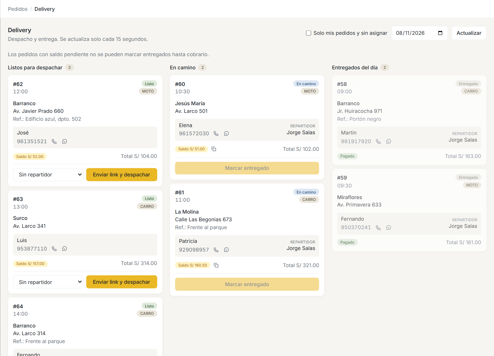
Al llegar, pulsa Marcar entregado. Si el pedido aún debe saldo, el botón queda bloqueado hasta que se cobre (Pagos). El administrador puede habilitar entregas con saldo; en ese caso queda una advertencia en el historial.
Admin · Vendedora
Tabla de pedidos con su total, lo pagado y el saldo. Arriba ves el saldo total por cobrar. Busca por número, cliente o teléfono, filtra por fecha de entrega y, si quieres ver también los pagados, desmarca “Solo con saldo pendiente”.
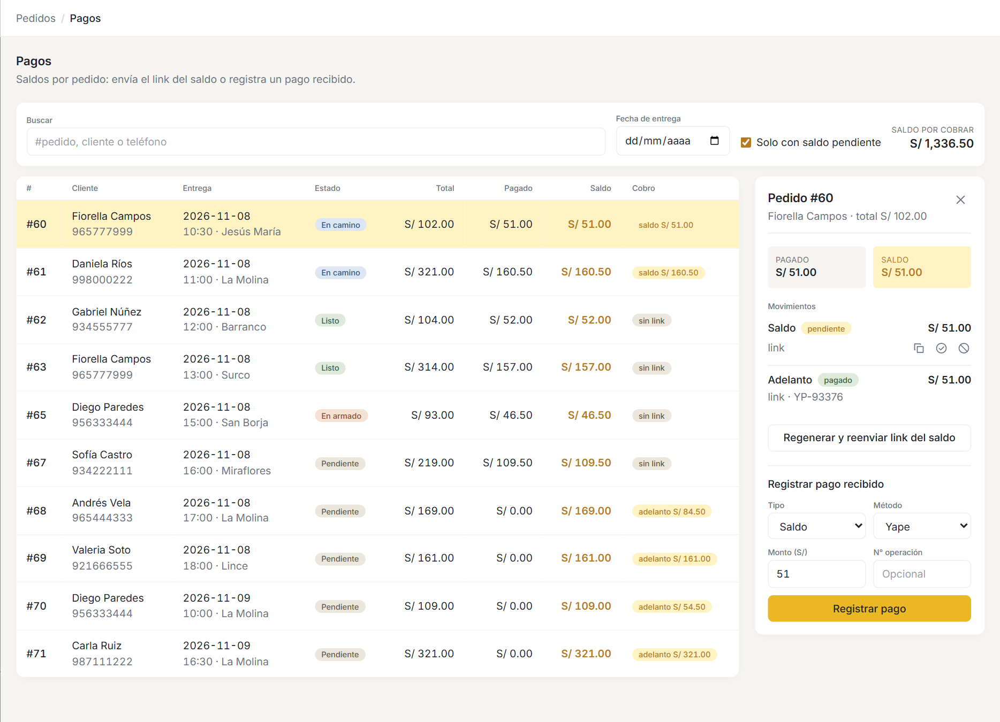
Pulsa una fila para abrir el panel del pedido:
Admin · Almacén
Lista de insumos con stock actual, stock mínimo, costo promedio y valor. Todo se maneja en unidad base (tallo, gramo, hoja, metro o unidad).
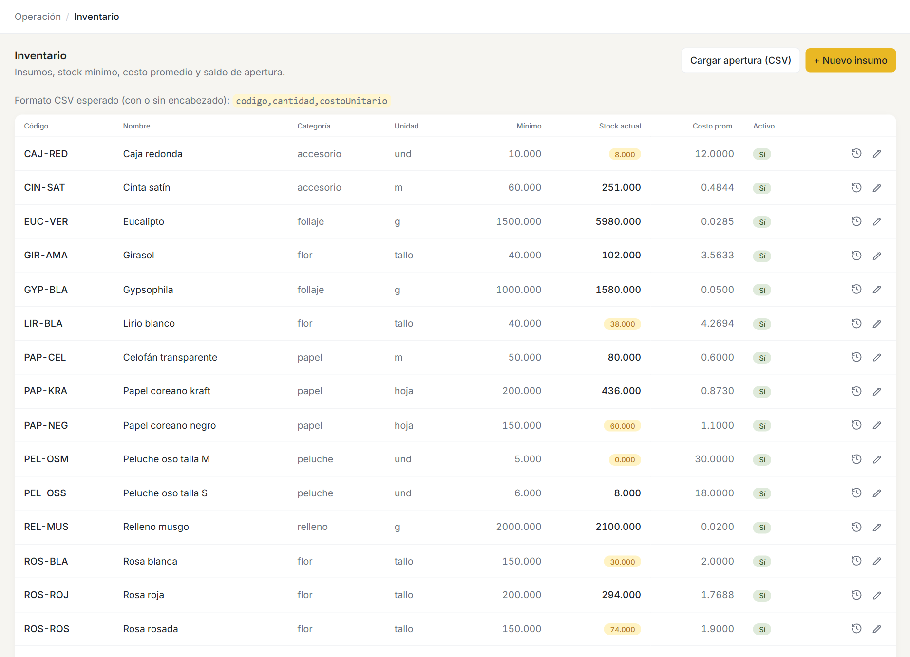
Pulsa en un insumo para ver cada entrada y salida con su saldo: apertura, compras, consumos de pedidos y mermas. El Kardex nunca se edita: cada movimiento queda registrado.
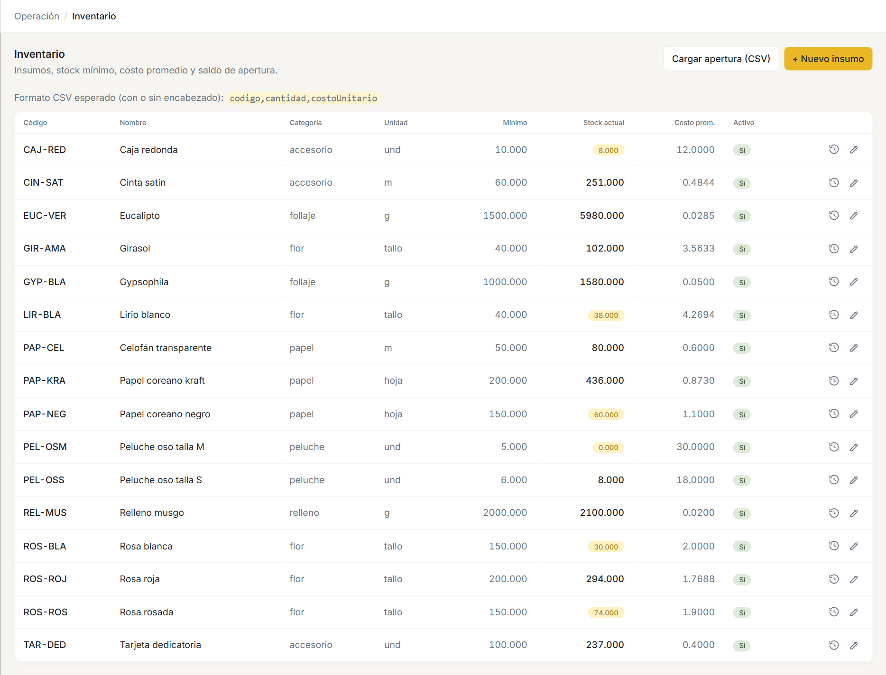
Para corregir uno existente pulsa , cambia los datos en la misma fila y guarda con . Con + Nuevo insumo indica código (ej. ROS-ROJ), nombre, categoría, unidad y stock mínimo. Marca Es flor si puede ser flor principal o de cambio, y Es caja si los pedidos que la lleven deben salir en carro.
El conteo inicial del almacén se carga una sola vez con Cargar apertura (CSV), en formato codigo,cantidad,costoUnitario. Si algún código no existe o el insumo ya tiene movimientos, no se carga nada y verás la lista de errores.
Admin · Almacén
El sistema calcula cuánto comprar de cada insumo para cubrir el stock mínimo, lo reservado por pedidos pendientes y la demanda de los próximos días (consumo promedio de las últimas 4 semanas), y descuenta lo que ya está pedido en órdenes abiertas.
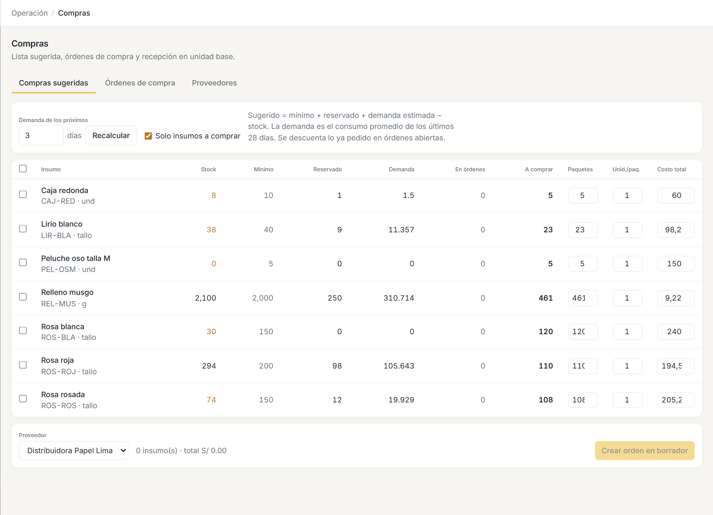
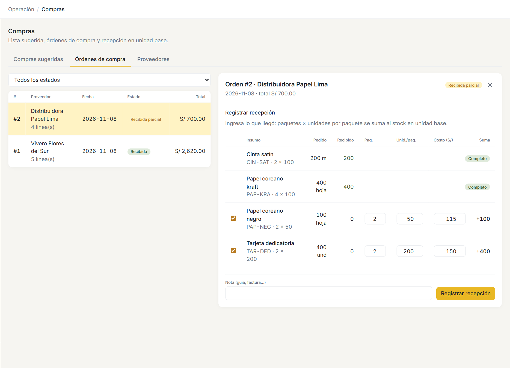
Puedes recibir por partes: la orden queda Recibida parcial hasta completar todas las líneas.
En la pestaña Proveedores agrega nombre, RUC (11 dígitos) y teléfono. desactiva un proveedor y lo reactiva.
Admin (Producción y Almacén pueden ver las recetas)
La tabla muestra cada producto con su precio y margen por talla (precio menos el costo de la receta al costo promedio actual). Pulsa para abrir su ficha y para desactivarlo.
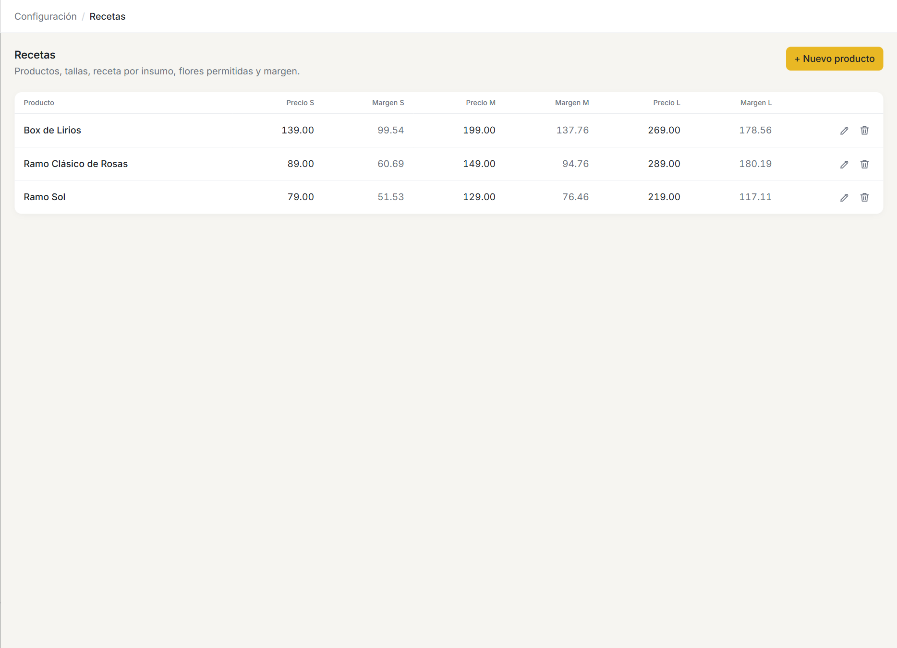
flor_principal (se reemplaza si el cliente cambia la flor), papel (se reemplaza si cambia el papel) u otro. Quita una línea con y pulsa Guardar receta.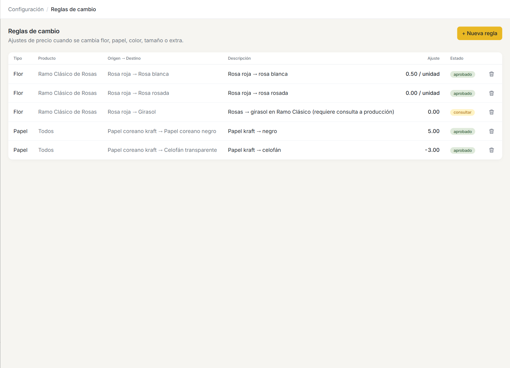
Definen qué cambios se permiten y cuánto suman o restan: tipo (flor, papel...), producto (vacío = todos), insumo de origen y de destino, modo fijo o por unidad (por cada flor de la receta) y monto, que puede ser negativo. El estado consultar hace que ese cambio pase por Producción.
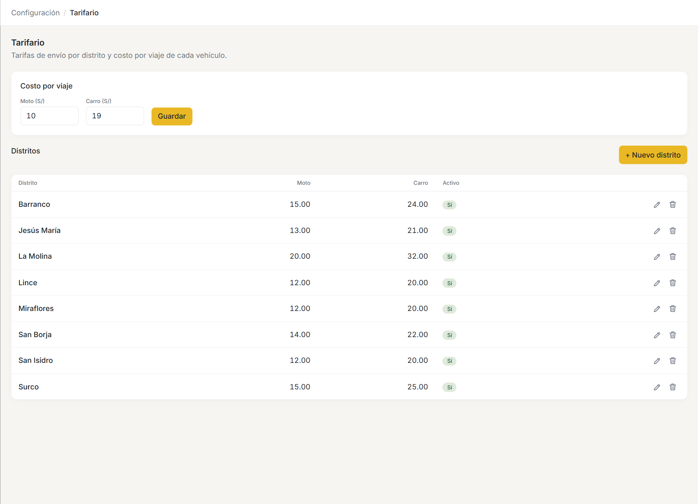
Edita un distrito con y guarda con . Tarifa de envío en moto y carro por distrito, y el costo por viaje de cada vehículo, que se usa en el reporte de envíos.
Integraciones (Shopify y WhatsApp) llegará en la siguiente fase.
Admin
Elige el rango de fechas (o un atajo: 7, 30, 90 días, este mes) y pulsa Aplicar. Todos los reportes usan la fecha de entrega del pedido.
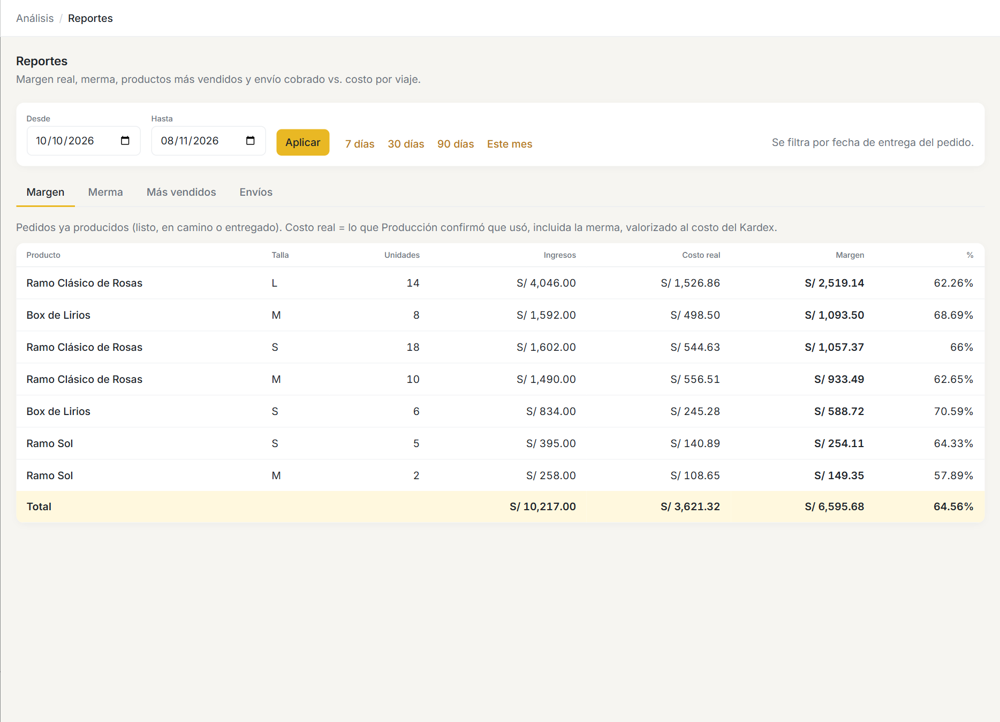
| Reporte | Qué responde |
|---|---|
| Margen | Cuánto se ganó por producto y talla: precio cobrado menos lo que Producción confirmó que usó (incluida la merma), valorizado al costo del Kardex. |
| Merma | Cantidad y valor perdido por insumo: lo usado de más en producción y lo consumido en pedidos cancelados. |
| Más vendidos | Ranking gráfico del top 10 y tabla con unidades, pedidos e ingresos por producto y talla. |
| Envíos | Lo cobrado de envío frente al costo de los viajes, por distrito y vehículo. |
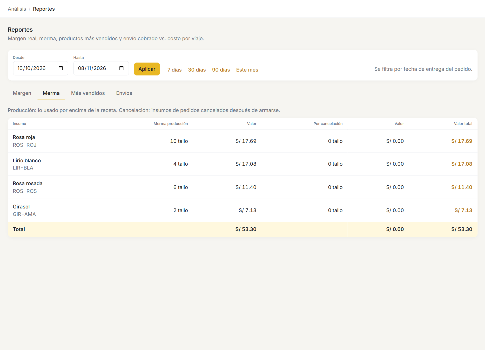
No hay insumos suficientes para armarlo, contando lo reservado por otros pedidos. Pasa el mouse sobre la opción para ver qué falta.
Falta asignar la encargada o tiene una consulta sin responder.
El pedido tiene saldo y aún no se generó el link: usa Enviar link y despachar.
El pedido debe saldo. Confirma el pago en Pagos o pide al administrador que habilite entregas con saldo.
El consumo no se edita. Pide un ajuste de stock al administrador del sistema; queda registrado en el Kardex.
No. El pedido guarda el precio y los cambios del momento de la venta; si luego cambian las tarifas o las reglas, los pedidos anteriores no se alteran. Solo cambia si Producción aprueba una consulta con ajuste de precio.
| Receta | Insumos y cantidades de un producto por talla. |
| Receta efectiva | La receta del pedido concreto, ya con los cambios de flor, papel y extras. |
| Reservado | Insumos comprometidos por pedidos pendientes y en armado. |
| Disponible | Stock actual menos lo reservado. Es lo que se puede vender. |
| Merma | Lo usado por encima de la receta, o lo consumido en un pedido cancelado. |
| Kardex | Registro de cada entrada y salida de un insumo con su saldo. |
| Costo promedio | Costo por unidad base, recalculado en cada compra (promedio ponderado). |
| Unidad base | La unidad en que se cuenta un insumo: tallo, g, hoja, m o und. |
| Consulta | Pedido especial o cambio no listado que Producción debe aprobar. |
| Saldo | Total del pedido menos lo pagado. |